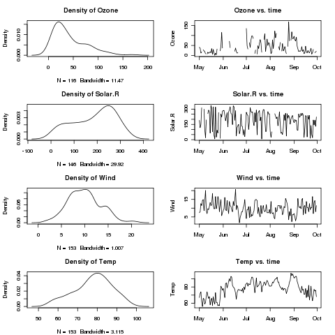
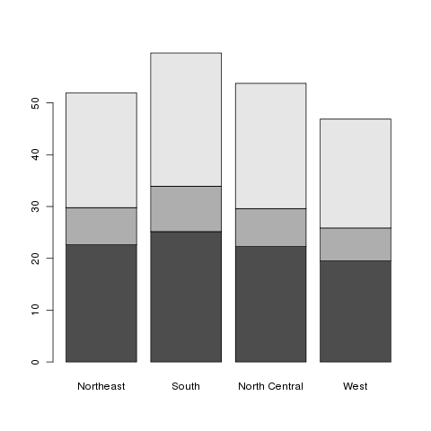
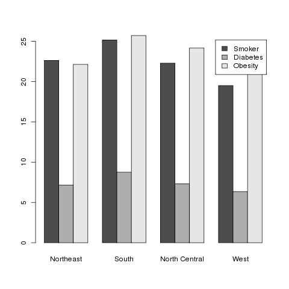
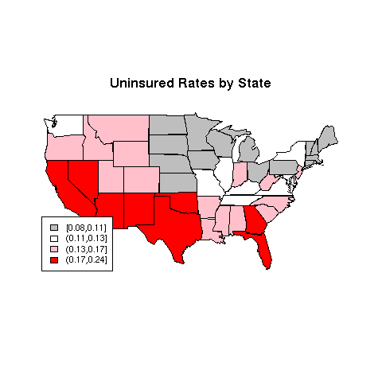
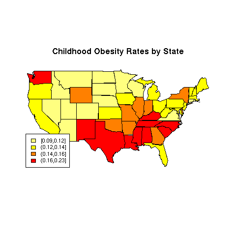

Mapping and Lattice Plots
As can be seen, the default for multiple plots leaves quite a bit of
space between the plots. The graphics parameter that controls this is
called mar. The value that determines the spacing is a vector
of length 4, with the number of lines of space on the bottom, left, top,
and right of the plots. We can find the current value of graphics
parameters by passing the name of the parameter to par:
> par('mar')
[1] 5.1 4.1 4.1 2.1
Let's remove one line from each of the top and bottom, and
replot the series of graphs:
> par(mar=c(4.1,4.1,3.1,2.1),mfrow=c(4,2))
> sapply(names(airquality)[1:4],twoplot)
Ozone Solar.R Wind Temp
[1,] 1216 1216 1216 1216
[2,] 1247 1247 1247 1247
[3,] 1277 1277 1277 1277
[4,] 1308 1308 1308 1308
[5,] 1339 1339 1339 1339
[6,] 1369 1369 1369 1369
The plot is shown below:

After plotting multiple plots, you can restore R's normal behaviour
of plotting each plot on a separate page by resetting mfrow
as follows:
> par(mfrow=c(1,1))
1 More on Barplots
We briefly looked at barplots when we examined the day of the week on which
popular movies opened. You may recall that we passed the result of a call
from the table function to barplot. This idea can be
extended to create side-by-side or stacked barplots. As an alternative to
using table, we can produce a matrix with the values we wish
to plot. By providing dimnames for this matrix, barplot
will be able to appropriately label the plot.
Once again consider the
risk data set we used earlier. To simplify the plot, the different
states in the data set can be grouped into regions, using the built-in
state.name and state.region objects:
> risk = merge(risk,data.frame(state=state.name,region=state.region),by.x='CHSI_State_Name',by.y='state')
Suppose we're interested in comparing the average smoking, diabetes, and
obesity rates for the different regions. First, we use the aggregate
function to find the averages of the variables, broken down by regions:
> mns = aggregate(risk[,c('Smoker','Diabetes','Obesity')],risk['region'],mean,na.rm=TRUE)
> mns
region Smoker Diabetes Obesity
1 Northeast 22.62537 7.161972 22.13430
2 South 25.15847 8.754302 25.71493
3 North Central 22.28592 7.318565 24.16283
4 West 19.50740 6.349167 21.01306
If we try to pass this data frame to barplot, we'll get an
error, since barplot needs a matrix.
In addition, the column that identifies the different groups (in this
case region), needs to be part of the row names, not a variable
in the data frame itself. These two steps create the row names,
and eliminate the region column from the data frame:
> row.names(mns) = mns$region
> mns$region = NULL
If we were to use the following statement to create the barplot:
> barplot(as.matrix(mns))
we'd find that the bars were representing the variables, not
the regions. To fix this, we simply pass the transpose of the matrix
to barplot:
> barplot(t(as.matrix(mns)))
Here's what the plot looks like:

This is known as a stacked barplot, and while it's useful for some
kinds of data, I don't find it appropriate for this type of data. By
passing the beside=TRUE argument to barplot, we can
produce a side-by-side barchart, which I find more useful. The
legend=TRUE argument helps to identify the bars:
> barplot(t(as.matrix(mns)),beside=TRUE,legend=TRUE)
Here's the result:

2 Mapping
We've looked at some data about different countries around the world,
but so far we haven't taken advantage of the fact that the data has
a geographic origin (other than trying to see if relationships were
different among different continents by using color to represent
continent in scatterplots.) The R library maps gives us the
ability to use different colors to represent values of variables on
actual maps of the world or the United States. A current concern in
the United States has to do with the number of people without health
insurance. Since this continues to be of great concern,
it would be interesting to see if there are
geographic patterns to the rate of ininsured adults in the different
states.
The data for this example comes from the swivel.com
website, and can be downloaded from the class website from
http://www.stat.berkeley.edu/classes/s133/data/insurance.csv.
> library(maps)
> ins = read.csv('http://www.stat.berkeley.edu/classes/s133/data/insurance.csv',stringsAsFactors=FALSE)
> head(ins)
State Employer Individual Medicaid Medicare Other.Public Uninsured
1 Alabama 0.54 0.03 0.15 0.13 0.01 0.14
2 Alaska 0.52 0.04 0.16 0.06 0.05 0.17
3 Arizona 0.47 0.05 0.16 0.13 0.01 0.18
4 Arkansas 0.47 0.06 0.15 0.14 0.02 0.17
5 California 0.48 0.07 0.16 0.09 0.01 0.18
6 Colorado 0.59 0.07 0.07 0.08 0.02 0.16
The first step in preparing a map (after loading the maps library)
is determining a variable to use to provide color to the different regions.
In this case we'll use the Uninsured variable. Our goal will
be to break the data up into four groups, based on the value of the
Uninsured variable, and then to color in each state in the
map using a color based on the groups.
To create the four groups based on values of Uninsured, we can
use the cut function. If we pass cut a variable and
a number of groups, it will divide the range of the variable by that
number, and assign each variable to one of the groups. Depending on
how the variable is distributed, there may be more observations in one
group than the other. Alternatively, we can provide cut with
a breaks= argument, giving one more value than the number of groups
we want, and it
will assign the values to groups based on the ranges that the breaks
define. Thus, if different values of the variable being used to determine
the ranges have special meanings, the grouping can be customized using
this argument. A final alternative is to guarantee nearly equal-sized
groups by using quantiles of the variable in question as the breaks. The
include.lowest=TRUE argument should be included to make sure that
the smallest value gets properly classified. To create four equal-sized
groups for the Uninsured variable, we could use the following
call to cut:
> ugroups = cut(ins$Uninsured,quantile(ins$Uninsured,(0:4)/4),include.lowest=TRUE)
> head(ugroups)
[1] (0.13,0.17] (0.13,0.17] (0.17,0.24] (0.13,0.17] (0.17,0.24] (0.13,0.17]
Levels: [0.08,0.11] (0.11,0.13] (0.13,0.17] (0.17,0.24]
Notice that cut produces a factor by default; to suppress
this, use the labels=FALSE argument. The factor, since it contains
information about the actual values, will turn out to be quite useful.
The maps library provides three databases: "world",
"state", and "county". For each identifier in the database,
there is information on what polygons need to be drawn to create an outline
of the area in question. For example, the entry identified by
california in the state database would contain the
information about California's borders in the form of polygon coordinates which
the polygon function will draw when we ask for a map of California.
While the help page for the map function implies that we can pass
a vector of region names and colors directly to map, things are complicated
by the fact that some states can't be plotted by a single polygon, and
map gets confused about the proper colors to use when it needs to draw
more than one polygon for a state.
One way around the problem is to create multiple entries in a vector of colors
for those states that have more than one polygon. To do this, we need to look
at the region names stored inside the database. We can get a vector of region
names by calling map with the names=TRUE and
plot=FALSE arguments:
> map.names = map('state',names=TRUE,plot=FALSE)
The regions which represent multiple polygons for a single state will always
contain semicolons:
> grep(':',map.names,value=TRUE)
[1] "massachusetts:martha's vineyard" "massachusetts:main"
[3] "massachusetts:nantucket" "michigan:north"
[5] "michigan:south" "new york:manhattan"
[7] "new york:main" "new york:staten island"
[9] "new york:long island" "north carolina:knotts"
[11] "north carolina:main" "north carolina:spit"
[13] "virginia:chesapeake" "virginia:chincoteague"
[15] "virginia:main" "washington:san juan island"
[17] "washington:lopez island" "washington:orcas island"
[19] "washington:whidbey island" "washington:main"
To properly connect our data with these region names, we first create a
vector of state names corresponding to the regions in the data base:
> map.states = sub('^([^:]*):.*','\\1',map.names)
Now we can use the match function to see which observations in the
ins dataframe correspond to the regions in the database. Since
the database uses all lower case, I'll use the tolower function
to convert the state names in the ins data frame to lower case:
> which.state = match(map.states,tolower(ins$State))
Now that we know how the state names line up with the region names, we
can create a vector of colors to properly create our map:
> mycolors = c('gray','white','pink','red')
> thecolors = mycolors[ugroups[which.state]]
This process is complicated enough that it might be worth making a function
to give us the proper vector of groupings. Here's such a function, created
by putting together the steps we just followed:
mapgroups = function(db,myregions,mygroups,tolower=TRUE){
map.names = map(db,names=TRUE,plot=FALSE)
map.regions = gsub('^([^:]*):.*$','\\1',map.names)
if(tolower)myregions = tolower(myregions)
which.region = match(map.regions,myregions)
mygroups[which.region]
}
(I've included the tolower= argument because not all the map
databases use lower case.)
Using this function (or the step-by-step approach that led to it), we
can now make our plot:
> mycolors = c('gray','white','pink','red')
> thecolors = mycolors[mapgroups('state',ins$State,ugroups)]
> map('state',col=thecolors,fill=TRUE)
Plots like this should always have a legend:
> title('Uninsured Rates by State')
> legend('bottomleft',legend=levels(ugroups),fill=mycolors,cex=.8)
The map is pictured below.

There are a variety of functions in R which will help us choose colors that
will be useful for plotting. Some of the functions you might want to
investigate include rainbow, heat.colors,
topo.colors, as well as
the color.gradient function in the
plotrix library, the colorpanel function in the
gplots library.
and the functions in the RColorBrewer library. Let's look at
another example, also from swivel.com, concerning rates of childhood
obesity. A copy of the dataset is available on the class website.
> obesity = read.csv('http://www.stat.berkeley.edu/classes/s133/data/obesity.csv')
Before preceding, it turns out that the state names in this data set
have some embedded blanks:
> head(as.character(obesity$State))
[1] " Alabama " " Alaska " " Arizona " " Arkansas " " California "
[6] " Colorado "
Left uncorrected, this would make our mapgroups function
fail to find any matching states in the map data base, and when we plot the
map, there would be no colors. If you think you're doing everything right,
but there are no colors on the map, check to make sure that the state
names are correct.
Naturally fixing something like this is not a problem:
> obesity$State = gsub('^ +','',obesity$State)
> obesity$State = gsub(' +$','',obesity$State)
Now we can proceed with producing the map.
We'll use the Childhood.Obesity.Rate variable for the
example, and a color scheme generated by the heat.colors function:
> mycolors = rev(heat.colors(4))
> ogroups = cut(obesity$Childhood.Obesity.Rate,
+ quantile(obesity$Childhood.Obesity.Rate,(0:4)/4),include.lowest=TRUE)
> thecolors = mycolors[mapgroups('state',obesity$State,ogroups)]
> map('state',col=thecolors,fill=TRUE)
> title('Childhood Obesity Rates by State')
> legend('bottomleft',legend=levels(ogroups),fill=mycolors,cex=.8)
The map appears below:

File translated from
TEX
by
TTH,
version 3.67.
On 27 Feb 2011, 08:31.